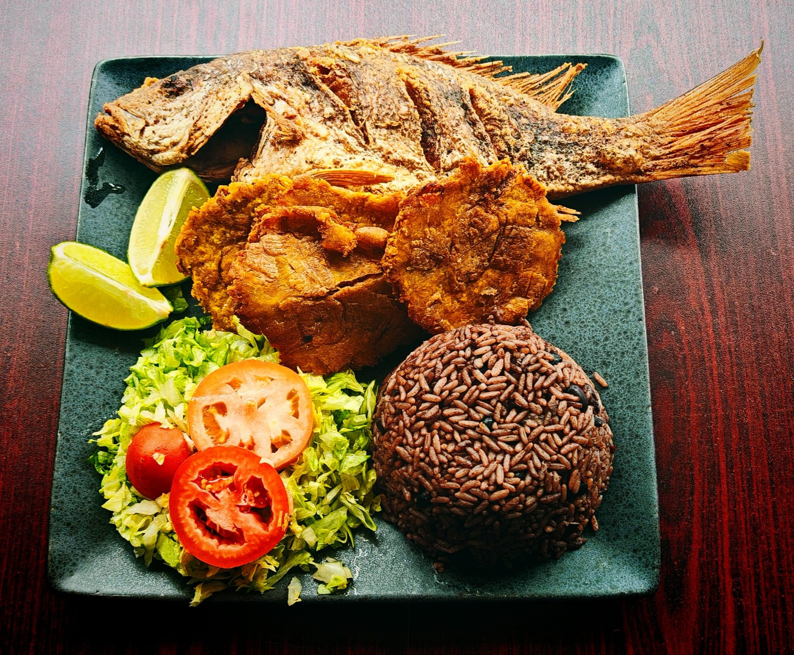

A little about us!
Welcome to El Cubano Restaurant, where we bring the vibrant flavors of Cuba to your table! Established in 2010, our restaurant has been dedicated to providing an authentic Cuban dining experience in the heart of Lancaster, PA.
At El Cubano, we pride ourselves on using traditional recipes passed down through generations, combined with fresh, locally sourced ingredients. Our menu features a variety of classic Cuban dishes, including Ropa Vieja (Stewed Beef), Lechón Asado (Roast Pork), and our locally famous Empanadas, all crafted to perfection by our skilled chefs.
Our warm and inviting atmosphere is perfect for family gatherings, romantic dinners, or casual outings with friends. We are committed to delivering exceptional service and ensuring that every guest leaves satisfied and eager to return.
Thank you for choosing El Cubano Restaurant. We look forward to serving you and sharing the rich culinary heritage of Cuba!
- Business Hours:
- Mon-Sun 10am - 10pm
- Closed on all major holidays
- Phone: (717) 493-8783